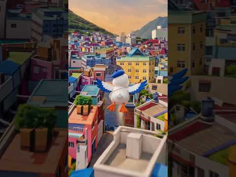
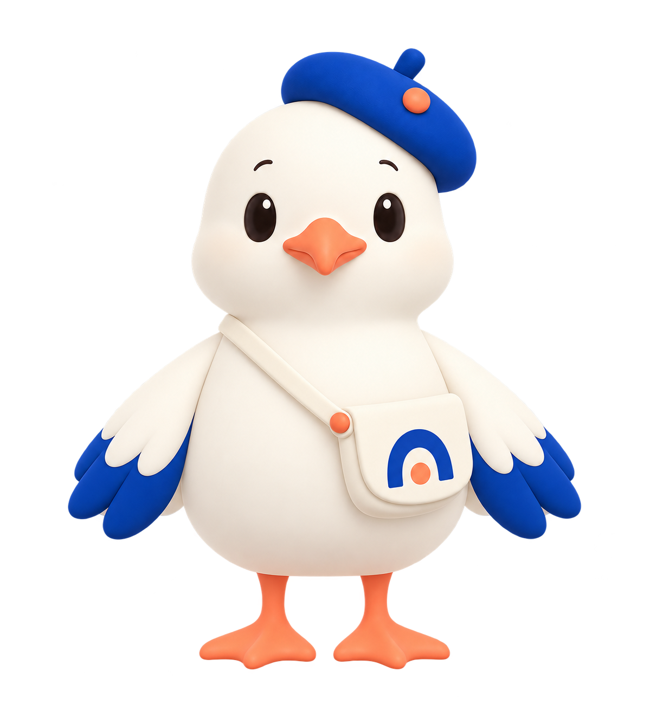
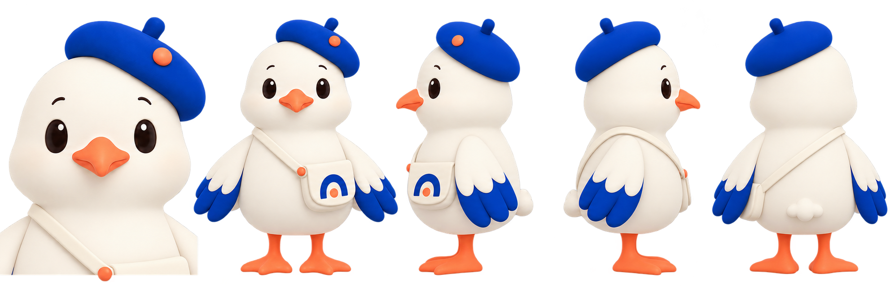
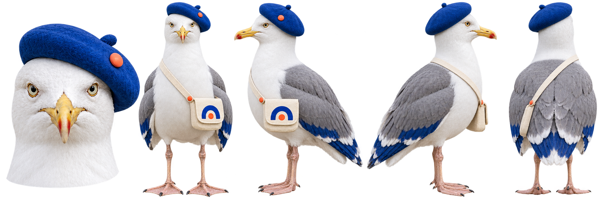
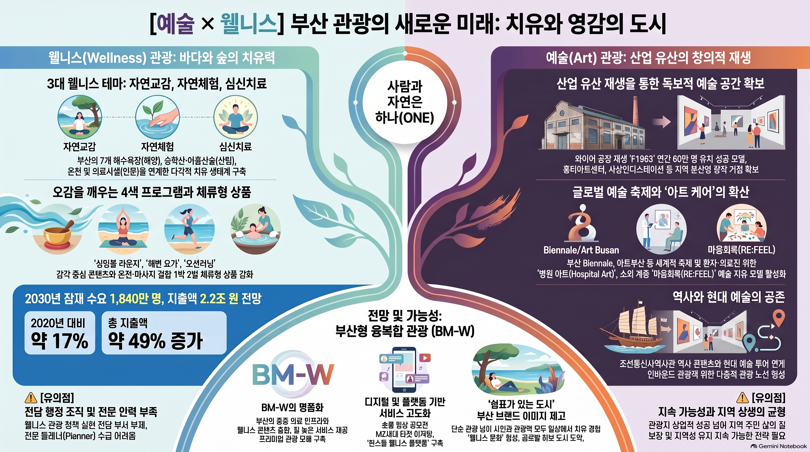

sns
brand: ARTOUR_BUSAN
networks: 5
status: online
LOCAL ART TRAVEL CHANNEL
아르투어부산
부산의 풍경과 일상을 예술의 시선으로 만납니다. 미술관과 문화공간, 도시의 장면을 짧은 영상과 여행 기록으로 연결합니다.
- #부산예술
- #부산여행
- #문화공간
[01]
X@artour_busan
[02]
부산의 예술 장면과 새 소식을 빠르게 연결하는 실시간 피드.
YouTube아르투어부산
[03]
Shorts와 커뮤니티 기록으로 이어지는 부산 문화 탐색.
Instagram@artour_busan
[04]
릴스와 이미지로 빠르게 만나는 부산의 예술 여행.
Facebook아르투어부산
[05]
부산 문화 여행 콘텐츠와 채널 소식을 모아 보는 페이지.
Naver Blogartour_busan
장소의 맥락과 여행 정보를 오래 읽을 수 있는 아카이브.

latest_short.log2026-10-22
부산 여행하던 갈매기가 갑자기 진지해진 이유
아르투어부산의 캐릭터와 부산 여행 이야기를 결합한 첫 번째 Shorts 콘텐츠입니다.
CHARACTER / SEAGULL
예술 여행을 함께하는 씨걸이
부산을 상징하는 갈매기에 예술가의 푸른 베레모와 여행자의 작은 가방을 더했습니다. 낯선 전시와 공간에도 가볍게 들어가 볼 수 있도록, 친근한 표정과 둥근 실루엣으로 다가가는 아르투어부산의 안내 캐릭터입니다.

부산의 갈매기, 예술 여행의 동행
- 푸른 베레모
- 바다의 색과 예술가의 이미지를 연결하는 시그니처입니다.
- 작은 크로스백
- 새로운 장소를 찾아 떠나는 여행자의 모습을 담았습니다.
- 둥근 형태와 표정
- 문화공간을 어렵지 않게 느끼도록 부드럽고 친근한 인상을 줍니다.
- 두 가지 표현
- 귀여운 기본형과 실제 갈매기의 질감을 살린 실사형이 같은 모자와 가방을 공유합니다.


ORIGIN / ART × WELLNESS
아르투어부산의 초기 구상
부산의 예술 공간과 바다·숲·온천의 쉼을 연결하는 관광 경험에서 출발했습니다. 예술과 웰니스를 한 장에 정리한 초기 기획 인포그래픽으로, 도시를 바라보는 두 시선이 현재의 예술 여행 콘텐츠로 이어집니다.
